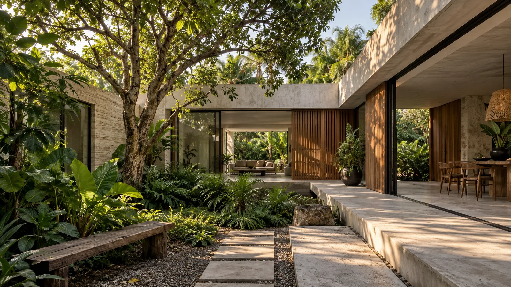

Casa del patio
Vivienda · arquitectura y paisaje
La casa se organiza alrededor de un árbol. Corredores abiertos, terrazas sombreadas y celosías de madera hacen del jardín una habitación más.
- Programa
- Vivienda + patio
- Superficie
- 240 m²
- Materiales
- Piedra, concreto, madera
- Etapa
- Anteproyecto